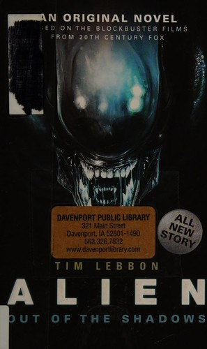
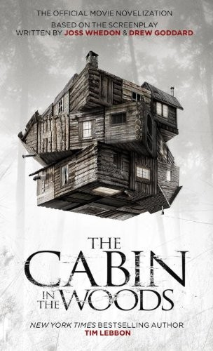
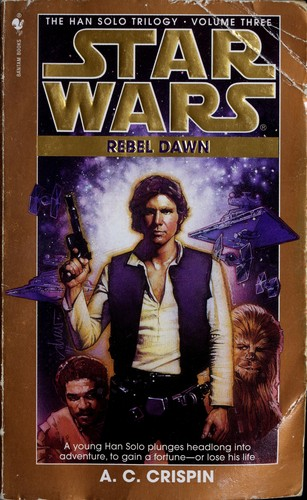
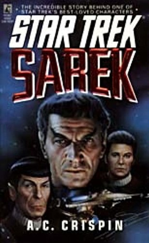
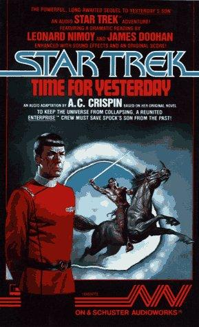
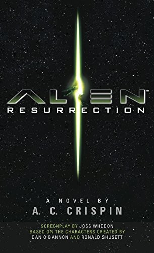

Acervo
12 resultados

Star Wars Legends · Livro 1
A. C. Crispin2016Aleph356 páginas
A juventude de Han Solo antes da Rebelião e da Millennium Falcon.
→

Star Wars Legends · Dawn of the Jedi
Tim Lebbon2013Del Rey320 páginas
Nas origens da Ordem Jedi, uma ranger Je’daii luta para salvar Tython de uma catástrofe.
→

Alien · Livro 1Tim Lebbon2014Titan Books352 páginas
Ripley enfrenta uma nova infestação de xenomorfos em uma mina distante.
→
Terror apocalípticoTim Lebbon2015Titan Books400 páginas
Uma família precisa sobreviver sem fazer barulho.
→
Terror · Universos paralelosTim Lebbon2012Hammer544 páginas
Uma passagem entre realidades libera uma epidemia devastadora.
→

Novelização oficialTim Lebbon2011Titan Books297 páginas
Cinco amigos descobrem o verdadeiro segredo de uma cabana isolada.
→
Eco-horrorTim Lebbon2020Titan Books384 páginas
Uma corrida clandestina invade uma natureza que não aceita visitantes.
→

Trilogia Han Solo · Livro 2A. C. Crispin1997Bantam Books340 páginas
Han e Chewie entram no perigoso submundo dos Hutts.
→

Trilogia Han Solo · Livro 3A. C. Crispin1998Bantam Books416 páginas
O caminho de Han Solo finalmente alcança Uma Nova Esperança.
→

Star TrekA. C. Crispin1994Pocket Books448 páginas
Um retrato do pai de Spock entre diplomacia, memória e família.
→

Star Trek · Livro 39A. C. Crispin1988Pocket Books303 páginas
Kirk, Spock e McCoy precisam reparar o fluxo do tempo.
→

Novelização oficialA. C. Crispin1997Warner Books276 páginas
Ripley retorna em um clone ligado aos xenomorfos.
→
Nenhum livro encontradoTente outra letra ou limpe os filtros.